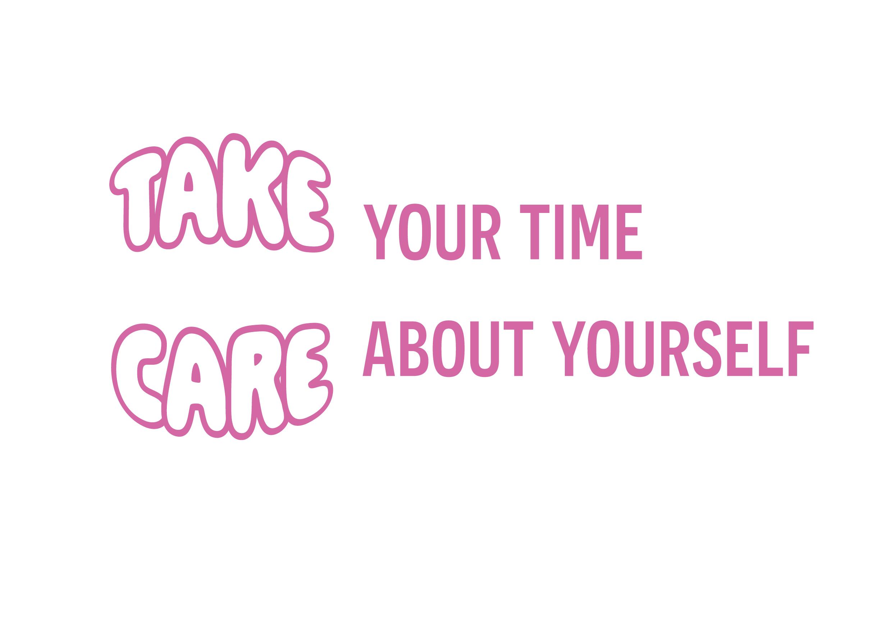

Afleveringen

Dagelijks leven met social media
Aflevering 6
In deze aflevering gaan we het hebben over social media. Social media is tegenwoordig heel erg groot vooral onder de jonge generatie. Denk aan platvormen zoals TikTok, Instagram en Snapchat. Het beïnvloed ons op wat er momenteel in de mode is maar leert ons ook handige tips en tricks. Lees verder…

Wat hangt er in onze kast
Aflevering 5
In deze aflevering gaan we het hebben over kleding. Veel meiden veranderen van kledingstijl door mee te gaan met trends, maar hebben dan niet altijd hun eigen stijl. In deze aflevering hebben we het dan over verschillende stijlen waar per stijl bijvoorbeeld een trend is en wat voor kleding wij zelf dragen. Lees verder…

De kracht van details
Aflevering 4
In deze aflevering gaan we het hebben over accessoires. Wij vinden dat accessoires echt je outfit afmaken. Je kan je outfit stijlen met grote oorbellen of een grote riem. We gaan het hebben over wat influencers of modellen doen. Wat voor trends er allemaal zijn die een statement maken. Lees verder…
Skintalk
Aflevering 3
In deze aflevering gaan we het hebben over skincare. Skincare is een belangrijk element. Het is goed voor de huid en toch ook wel een extraatje als het gaat om de verzorging van jezelf. We gaan onze eigen tips, adviezen en meningen delen en onder andere de trends bespreken over skincare. Lees verder…

Make-up, look good
Aflevering 2
In deze aflevering gaan we het hebben over make up. Elk meisje begint vanaf de middelbare make-up te dragen, vaak weten meiden dan nog niet hoe ze goed hun make-up mooi moeten doen en welke producten mooi en goed voor hun huid zijn. Lees verder…

De nieuwste trends
Aflevering 1
In deze aflevering hebben we het over de nieuwste trends. Trends die komen en gaan het is daarom interessant om te kijken waarom ze bijvoorbeeld weer uit de mode raken en waarom ze weer in de mode raken. Lees verder…